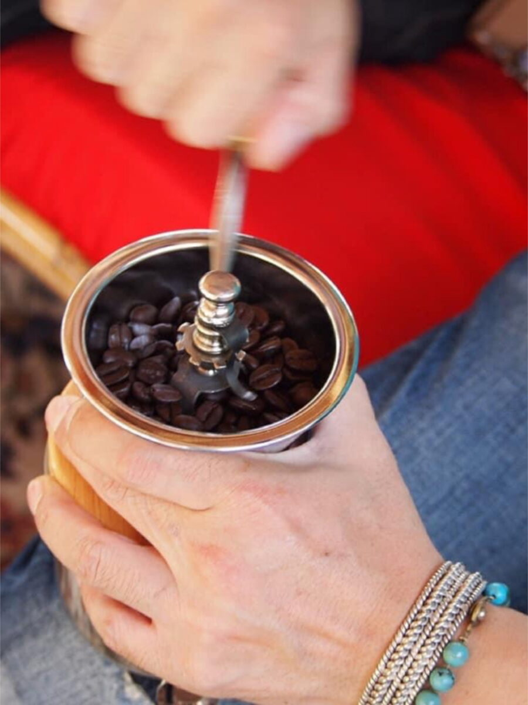

本日のコーヒー
300円
お店について
叶夢珈琲は、就労継続支援B型事業所『叶夢』が営むコーヒー豆の専門店です。2017年8月にオープンしました。
こだわりは3つ。生豆をすべてハンドピックして、欠点豆を取り除くこと。通常の2倍の時間をかけ、低温でじっくり焼き上げる「自家熟成甘味焙煎」。そして、焙煎した豆を寝かせて休ませることです。
営業時間
| 月曜日 | 10:30–17:00 |
|---|---|
| 火曜日 | 10:30–17:00 |
| 水曜日 | 10:30–17:00 |
| 木曜日 | 10:30–17:00 |
| 金曜日 | 10:30–17:00 |
| 土曜日 | 定休日 第1土曜は叶夢珈琲マルシェ 10:00–15:00（店頭） |
| 日曜日 | 定休日 |
月曜〜金曜 10:30–17:00。土曜・日曜は定休日ですが、毎月第1土曜は店頭で「叶夢珈琲マルシェ」を開いています（10:00–15:00）。祝日の営業はInstagramでご確認ください。 臨時の変更はInstagramでご確認ください。（日本時間）
このページは、Brightfront Studio が 叶夢珈琲（カナンコーヒー） のために制作した無料のプレビュー（見本）です。公開されている情報をもとに作成しており、お店の公式サイトではありません。
気に入っていただけたら、このデザインをお店の公式サイトとして公開できます。料金は、制作開始時に $250、完成してご承認いただいた後に $250、その後は月額 $39（ホスティング・更新・修正込み）です。